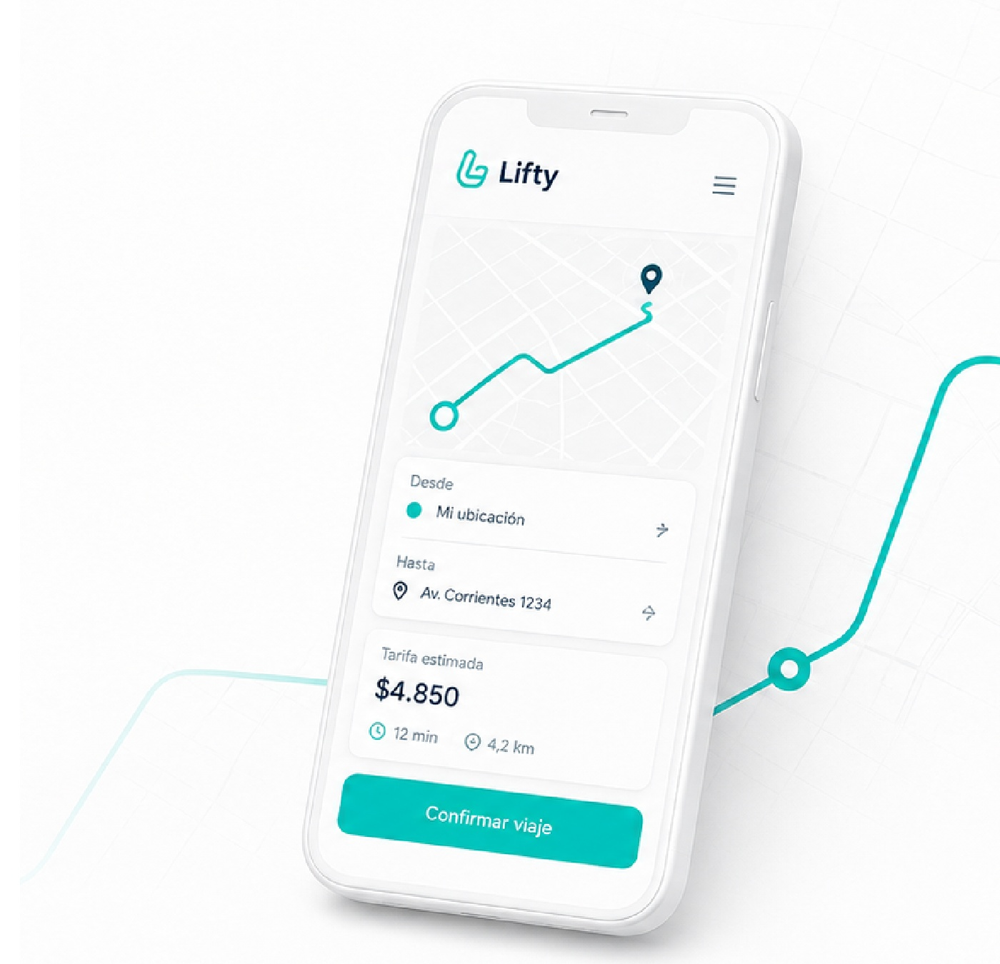
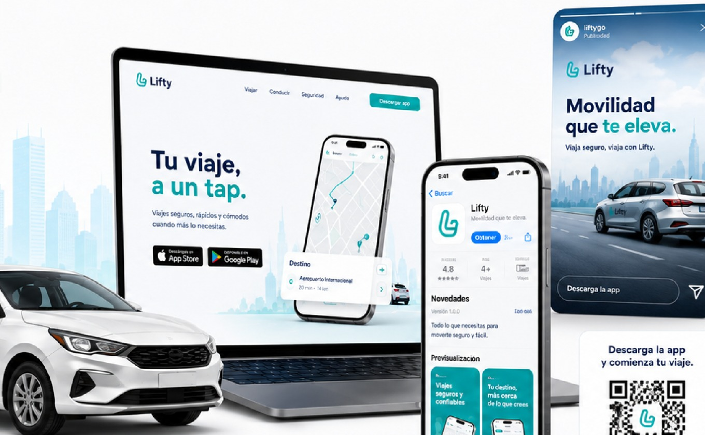
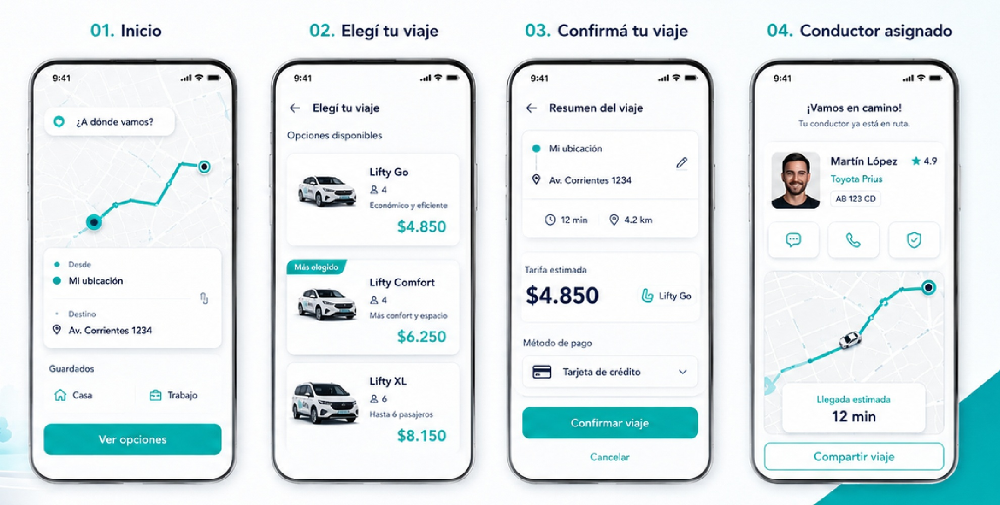
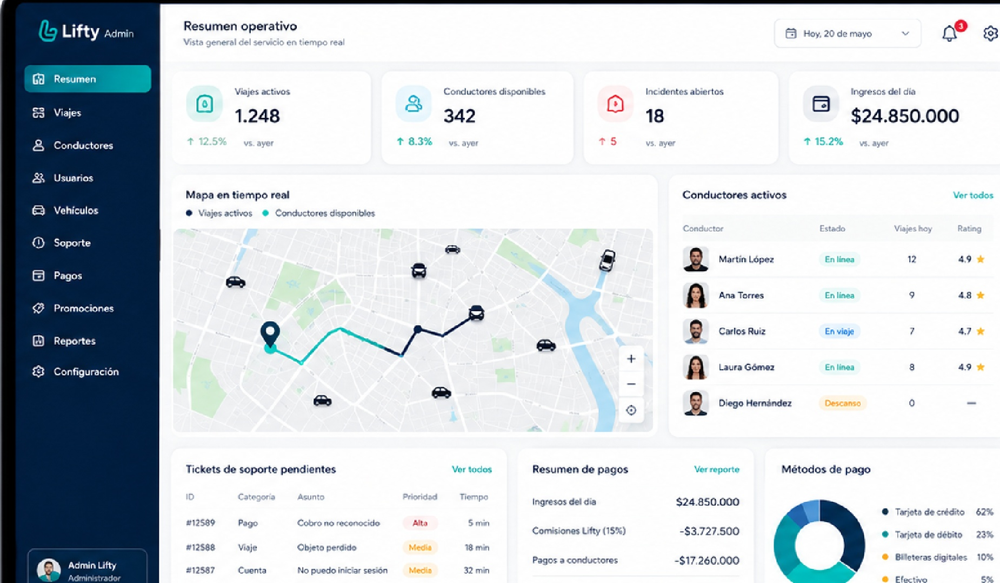

SeguridadConductor verificado
Proyecto en desarrollo
Villa Dolores
Tecnología con identidad local
Movilidad local,
segura y trazable.
Una plataforma pensada para ordenar la movilidad de Villa Dolores y conectar pasajeros, conductores e instituciones con mayor claridad.
01 Identidad verificada
02 Datos claros del viaje
03 Gestión ordenada

EstadoViaje en curso
12 min
Ubicación activaSeguimiento en tiempo real
Antes de confirmarTarifa clara
Etapa actualProyecto en desarrollo
Una marca local.
Una implementación formal, gradual y responsable.
Información visible antes de viajar.
Identidad, vehículo y recorrido.
Diseñada desde la realidad local.
Gestión y trazabilidad operativa.
Qué es Lifty
Una plataforma para conectar y ordenar.
Lifty integra la experiencia del pasajero, el trabajo del conductor y la gestión operativa en un mismo ecosistema digital.
App pasajeroSolicitud, tarifa y seguimiento.
App conductorRegistro, viajes y actividad.
Panel operativoControl, soporte y trazabilidad.

Aplicación Gestión Ciudad
Villa Dolores
Zona inicial proyectada
Problema y oportunidad
Ordenar la movilidad también es mejorar la experiencia.
La digitalización puede aportar información, trazabilidad y procesos más claros para quienes viajan, trabajan y gestionan.
- 01 Acceso irregular a viajes confiables.
- 02 Poca información antes de subir.
- 03 Procesos locales todavía dispersos.
- 04 Oportunidad de una solución formal y escalable.
Cómo funciona
Claridad en cada etapa del viaje.
Un recorrido simple para pedir, confirmar y acompañar el trayecto.

Origen DestinoSolicitá
Definí origen y destino.
Elegí
Compará opciones y tarifa.
Confirmá
Revisá todos los datos.
Seguí
Acompañá el recorrido.
Seguridad, control y trazabilidad
Información antes, durante y después del viaje.
La plataforma se proyecta con procesos de validación y seguimiento para brindar mayor claridad a pasajeros, conductores e instituciones.
IdentidadConductor validado
RecorridoUbicación en tiempo real
Conductor verificado
Identidad y documentación sujetas a validación.
Vehículo identificado
Datos visibles para reconocerlo antes de subir.
Seguimiento
Origen, destino y recorrido reunidos en la app.
Soporte
Canales de asistencia proyectados para cada etapa.
Historial
Registro para mayor control y trazabilidad operativa.
Beneficios
Una plataforma. Tres impactos.
Pasajeros
Más información y confianza antes de iniciar el viaje.
- Tarifa visible
- Datos del conductor
- Seguimiento
Conductores
Una herramienta profesional para ordenar su actividad.
- Solicitudes organizadas
- Registro formal
- Gestión clara
Ciudad
Mayor trazabilidad y un ecosistema local más moderno.
- Digitalización
- Datos operativos
- Identidad local
Avance institucional
Un proyecto pensado para avanzar de manera ordenada.
Lifty busca construir una implementación formal, responsable y alineada con la realidad de Villa Dolores.
Solicitar presentación institucionalDiálogo institucional
Cámara de Comercio y actores locales.
Requisitos municipales
Marco y condiciones de implementación.
Validación legal
Revisión normativa y operativa.
Documentación
Identidad, licencia y vehículo.
Prueba piloto
Grupo acotado y seguimiento cercano.
Implementación gradual
Ajustes antes del lanzamiento local.

Control operativoPanel en desarrollo
Estado actual
Una base sólida para la próxima etapa.
Marca e identidadSistema visual definido.
Experiencia de pasajeroFlujo principal diseñado.
Experiencia de conductorBoceto funcional preparado.
Construcción tecnológicaEtapa de desarrollo.
Validación institucionalPróximo paso del proyecto.
Próximas etapas
Un camino gradual hacia la operación local.
Validación
Diálogo y requisitos.
Ajustes
Marco legal y procesos.
Piloto
Grupo reducido y control.
Lanzamiento
Operación local inicial.
Escalamiento
Más zonas y alianzas.
Contacto
Sumate al futuro de la movilidad local.
Dejanos tus datos para recibir novedades del proyecto o solicitar información institucional.